콘크리트기사 (2017-03-05 기출문제)
1과목: 재료 및 배합
1. 굵은 골재의 밀도 및 흡수율 시험 방법으로 옳은 것은?
- 호칭 치수 5mm의 체에 남는 시료만을 철망에 넣고 20±5℃의 물속에서 24시간 담근 후 수중 질량을 측정한다.
- 표면 건조 포화 상태의 질량은 골재를 건조시킨 다음 흡수천 위에 굴려 약간의 수막이 남은 상태에서 측정한다.
- 시료를 절대 건조 상태까지 건조시킬 때는, 수분의 급격한 팽창을 막기 위해 100℃ 미만의 온도에서 건조시킨다.
- 표면 건조 포화 상태의 밀도, 절대 건조 상태의 밀도 및 흡수율은 각각 소수점 이하 첫째자리까지 구한다.
(정답률: 46%)

2. 제빙화학제에 노출된 콘크리트에서 플라애쉬, 고로슬래그 미분말 또는 실리카퓸을 시멘트 재료의 일부로 치환하여 사용하는 경우, 이들 혼화재의 사용량에 대한 설명으로 틀린 것은? (단, 혼화재의 사용량은 시멘트와 혼화재 전체에 대한 혼화재의 질량 백분율로 나타낸다.)
- 혼화재로서 실리카 퓸을 사용하는 경우 사용량은 10%를 초과하지 않도록 하여야 한다.
- 혼화재로서 플라이애쉬 또는 기타 포졸란을 사용하는 경우 사용량은 25%를 초과하지 않도록 하여야 한다.
- 혼화재로서 고로슬래그 미분말을 사용하는 경우 사용량은 30%를 초과하지 않도록 하여야 한다.
- 혼화재로서 플라이애쉬 또는 기타 포졸란과 실리카 퓸을 합하여 사용하는 경우 그 사용량은 35%를 초과하지 않도록 하여야 한다.
(정답률: 66%)
3. 콘크리트용 화학혼화제 시험(KS F 2560)에서 화학혼화제의 품질규정 항목에 속하지 않는 것은?
- 응결 시간의 차
- 투수 계수
- 압축 강도비
- 경시 변화량
(정답률: 58%)
4. 굵은 골재의 체가름 시험결과가 아래의 표와 같을 때 굵은 골재 최대치수(Gmax)조립률(FM)을 구한 것으로 옳은 것은?
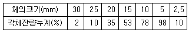
- 25mm, 7.11
- 25mm, 7.76
- 20mm, 7.11
- 20mm, 7.76
(정답률: 78%)
5. 시방배합결과 단위 굵은골재량의 절대용적이 409ℓ였고, 굵은골재의 표건밀도가 0.00263g/mm3라면, 단위 굵은골재량은?
- 1028kg
- 1043kg
- 1076kg
- 1100kg
(정답률: 57%)
6. 콘크리트에 사용되는 혼화재에 대한 설명으로 틀린 것은?
- 플라이애쉬는 포졸란 반응으로 인하여 콘크리트의 초기강도를 증대시킨다.
- 고로슬래그 미분말의 잠재수경성으로 인하여 콘크리트의 조직이 치밀해진다.
- 실리카 퓸을 포졸란 반응과 공극충전 효과로 인하여 콘크리트의 강도증진과 함께 투기성, 투수성을 감소시킨다.
- 팽창재는 에트린자이트와 수산화칼슘 등의 생성으로 인하여 콘크리트를 팽창시킨다.
(정답률: 77%)
7. 시멘트의 저장에 대한 콘크리트표준시방서의 규정 설명으로 틀린 것은?
- 시멘트는 방습적인 구조로 된 사일로 또는 창고에 품종별로 구분하여 저장하여야 한다.
- 시멘트의 온도가 너무 높을 때는 그 온도를 낮춘 다음 사용하여야 하며, 시멘트의 온도는 일반적으로 50℃ 정도 이하를 사용하는 것이 좋다.
- 포대시멘트를 쌓아서 저장하면 그 질량으로 인해 하부의 시멘트가 고결할 염려가 있으므로 시멘트를 쌓아올리는 높이는 13포대 이하로 하는 것이 바람직하다.
- 6개월 이상 장기간 저장한 시멘트는 사용하기에 앞서 재시험을 실시하여 그 품질을 확인한다.
(정답률: 59%)
8. 콘크리트의 배합에서 단위수량에 대한 설명으로 틀린 것은?
- 작업이 가능한 범위 내에서 될 수 있는 대로 적게 되도록 시험을 통해 정한다.
- 단위수량은 굵은골재의 최대치수, 골재의 입도와 입형, 혼화재료의 종류, 콘크리트의 공기량 등에 따라 다르므로 실제의 시공에 사용되는 재료를 사용하여 시험을 실시한 다음 정하여야 한다.
- 공기연행제, 감수제, 공기연행 감수제나 고성능 공기연행 감수제를 적당히 사용하면 단위수량을 상당히 감소시킬수 있다.
- 부순돌을 사용할 경우 단위수량은 입형에 따라 다르지만 자갈을 사용했을 경우에 비하여 약 10% 감소한다.
(정답률: 82%)
9. 시멘트 비중시험(KS L 5110)에 대한 설명으로 틀린 것은?
- 빕중시험 결과를 보고 시멘트의 품질을 어느 정도 추정할 수 있다.
- 르샤틀리에 플라스크를 이용한다.
- 시멘트는 반드시 64G을 이용한다.
- 물을 사용하면 수화반응이 진행되므로 광유를 사용한다.
(정답률: 81%)
10. 시멘트의 강도시험(KS L ISO 679)에 대한 설명으로 틀린 것은?
- 40mm×40mm×160mnm인 각주형 공시체를 사용하여 압축강도 및 휨 강도를 측정한다.
- 압축강도시험의 결과를 구할 때 6개의 측정값 중에서 1개의 결과가 6개의 평균값보다 ±10% 이상 벗어나는 경우에는 이 결과를 버리고 나머지 5개의 평균으로 계산한다.
- 휨 강도시험에서 시험체에 가하는 하중은 시험체가 파괴에 이를 때까지 50N/s±10N/s의 비율로 부드럽게 재하한다.
- 압축강도를 먼저 측정한 후 파단된 시험체로 사용하여 휨 강도시험을 실시한다.
(정답률: 66%)
11. 다음 철근 중 특수내진용으로 사용되는 것은?
- SD400
- SD400W
- SD500W
- SD400S
(정답률: 71%)
12. 콘크리트용 혼화재료로 사용되는 고로슬래그 미분말의 활성도 지수에 대한 다음 설명 중 적당하지 않은 것은?
- 기준 모르타르의 압축강도에 대한 시험 모르타르의 압축강도비를 백분율로 표시한 것을 활성도 지수라 한다.
- 활성도 지수는 재령 7일, 28일 및 91일에 측정한다.
- 시험 모르타르 제작 시 시멘트와 고로슬래그 미분말의 혼합비는 1:1이다.
- 고로슬래그 미분말 3종에 대한 재령 28일의 활성도 지수는 50% 이상이다.
(정답률: 60%)
13. 섬유보강콘크리트에 사용되는 강섬유에 관한 설명으로 틀린 것은?
- 강섬유 혼입률은 일반적으로 콘크리트용적에 대한 백분율로 나타낸다.
- 강섬유의 혼입률은 일반적으로 0.5~2.0% 정도이다.
- 강섬유콘크리트의 압축강도는 강섬유의 혼입률에 따라 크게 좌우된다.
- 강섬유의 길이는 굵은골재 최대치수의 1.5배 이상으로 할 필요가 있다.
(정답률: 60%)
14. 시방배합으로 산출된 단위수량이 165kg/m3인 콘크리트에서 잔골재의 표면수량 4%, 굵은 골재의 표면수량 2%인 현장골재를 사용하기 위해 현장배합으로 수정하였다. 현장배합으로 단위 잔골재량 650kg/m3, 단위 굵은골재량 1326kg/m3을 얻었다면 현장배합의 단위수량은?
- 123.5kg/m3
- 120.0kg/m3
- 114.0kg/m3
- 112.5kg/m3
(정답률: 33%)
15. 포틀랜드 시멘트의 물리적 특성에 대한 설명으로 옳지 않은 것은?
- 보통 포틀랜드 시멘트의 분말도는 2800cm2/g 이상이어야 한다.
- 분말도가 적을수록 수화작용이 빠르고 조기강도 발현이 커진다.
- 풍화된 시멘트를 사용하면 응결 및 경화속도가 늦어진다.
- MgO, SO3 성분이 과도한 경우 팽창이 발생하기 쉽다.
(정답률: 72%)
16. KS규정의 시멘트 시험에 대한 설명으로 부적절한 것은?
- 분말도가 시멘트의 입자 크기를 비표면적으로 나타내는 것으로써 블레인 공기투과 장치에 의해 측정할 수 있다.
- 강열감량은 일반적으로 시멘트를 약 1450℃로 가열했을 때의 감소되는 질량을 측정하여 백분율로 나타낸다.
- 시멘트의 강도 시험용 모르타르의 배합은 시멘트 : 표준사 = 1.3, 물/시멘트비는 0.5이다.
- 길모어 침에 의한 응결 시간은 사용한 물의 양이나 온도 또는 반죽의 반죽 정도뿐만 아니라 공기의 온도 및 습도에도 영향을 받으므로 측정한 시멘트의 응결시간은 근사값이다.
(정답률: 65%)
17. 설계기준 압축강도가 42MPa이고, 30회 이상의 시험실적으로부터 구한 압축강도의 표준편차가 5MPa일 때 콘크리트의 배합강도는?
- 47MPa
- 48.7MPa
- 49.5MPa
- 50.2MPa
(정답률: 59%)
18. 레디믹스트 콘크리트에 사용할 혼합수에 관한 사항 중 옳지 않은 것은?
- 상수돗물이나 지하수는 시험을 하지 않아도 사용할 수 있다.
- 회수수를 사용하였을 경우, 단위 슬러지 고형분율이 3.0%를 초과하면 안된다.
- 레디믹스트 콘크리트를 배합할 때, 회수수 중에 함유된 슬러지 고형분은 물의 질량에는 포함되지 않는다.
- 슬러지수에서 슬러지 고형분을 침강 또는 기타 방법으로 제거한 물을 상징수라고 한다.
(정답률: 73%)
19. 내동해성을 기준으로 하여 물-결합재비를 정하는 경우 다음 노출상태에 해당하는 보통골재 콘크리트의 최대 물-결함재비는?
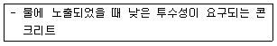
- 0.40
- 0.45
- 0.50
- 0.55
(정답률: 60%)
20. 콘크리트용 플라이애쉬로 사용할 수 없는 것은?
- 이산화규소의 함유량이 48%인 경우
- 강열감량이 6%인 경우
- 밀도가 2.2g/cm3인 경우
- 수분이 0.5%인 경우
(정답률: 68%)
2과목: 제조, 시험 및 품질관리
21. 재료분리현상을 줄이기 위한 방법으로 틀린 것은?
- 잔골재율을 작게 한다.
- 물-결합재비를 작게 한다.
- 1회 타설높이를 작게 한다.
- AE제, 감수제 등의 혼화재료를 사용한다.
(정답률: 57%)
22. 콘크리트 구성재료의 계량에서 일반적으로 계량 허용오차가 가장 큰 것은?
- 시멘트
- 혼화제
- 혼화재
- 물
(정답률: 73%)
23. 다음 중 길이, 질량, 강도 등의 데이터를 관리하기에 가장 이상적인 관리도는?
- P 관리도
- pn 관리도
- c 관리도
 -R관리도
-R관리도
(정답률: 78%)
24. 압력법에 의한 굳지 않은 콘크리트의 공기량 시험(KS F 2421)에 대한 설명으로 틀린 것은?
- 시험의 원리는 보일의 법칙을 기초로 한 것이다.
- 공기량 측정기의 용적은 물을 붓지 않고 시험하는 경우(무주수법)는 적어도 5L정도 이상으로 하여야 ㅎ한다.
- 공기량을 측정한 콘크리트에서 150μm의 체를 사용하여 시멘트 분을 씻어 낸 골재를 골재수정 계수 측정용 시료로 사용할 수 있다.
- 콘크리트의 공기량(%)은 콘크리트의 겉보기 공기량(%)에서 골재 수정 계수(%)를 뺀 값으로 구한다.
(정답률: 68%)
25. 콘크리트의 전단탄성계수(G)를 구하는 공식으로 옳은 것은? (단, E는 탄성계수, m은 프와송수 이다.)
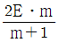
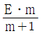
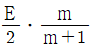
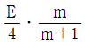
(정답률: 65%)
26. 콘크리트의 받아들이기 품질검사에 관한 내용으로 틀린 것은?
- 검사결과 불합격 판정을 받은 콘크리트를 사용해서는 안된다.
- 강도검사는 콘크리트의 배합검사를 실시하는 것을 표준으로 한다.
- 내구성 검사는 공기량 및 염소이온량을 측정하는 것으로 한다.
- 워커빌리티 검사는 슬럼프가 설정치를 만족하는지의 여부만 확인하는 것이다.
(정답률: 57%)
27. 급속 동결 융해에 대한 콘크리트의 저항 시험 방법(KS F 2456)에서 규정하고 있는 동결 융해 사이클 및 시험방법에 대한 설명으로 틀린 것은?
- 동결 융해 1사이클은 공시체 표면의 온도를 원칙으로 하며 원칙적으로 4℃에서 -14℃로 떨어지고, 다음에 -14℃에서 4℃로 상승되는 것으로 한다.
- 동결 융해 1사이클의 소요시간은 2시간이상, 4시간 이하로 한다.
- 공시체의 중심과 표면의 온도차는 항상 28℃를 초과해서는 안된다.
- 특별히 다른 재령으로 규정되어 있지 않는 한, 공시체는 14일간 양생한 후 동결 융해 시험을 시작한다.
(정답률: 60%)
28. 플랜트에는 고정 믹서가 없고, 각 재료의 계량 장치만 설치되어 있으므로 계량한 재료를 직접 믹서 트럭에 투입하고 운반 도중 소정의 물을 가하여 혼합하면서 공사 현장에 도착하면 완전한 콘크리트로 공금하는 레디믹스트 콘크리트는?
- 센트럴 믹스트 콘크리트
- 스마트 믹스트 콘크리트
- 트랜싯 믹스트 콘크리트
- 쉬링크 믹스트 콘크리트
(정답률: 60%)
29. 레디믹스트 콘크리트의 품질에 관한 설명으로 옳지 않은 것은? (단, KS F 4009 레디믹스트 콘크리트 규정을 따른다.)
- 슬럼프가 80m 이상인 경우 글럼프 허용오차는 ±20mm이다.
- 보통콘크리트의 경우 공기량은 4.5%로 하며, 그 허용오차는 ±1.5%로 한다.
- 1회의 강도시험결과는 호칭강도의 85% 이상이고 3회의 시험결과의 평균치는 호칭강도값 이상이어야 한다.
- 염화물 함유량의 한도는 일반적으로 배출지점에서 염화물이온량으로 0.30kg/m3이하로 하여야 한다.
(정답률: 64%)
30. 굳지 않은 콘크리트의 공기량에 대한 일반적인 설명으로 틀린 것은?
- AE제의 혼입량이 증가하면 공기량도 증가한다.
- 콘크리트의 온도가 높으면 공기량이 감소한다.
- 잔골재량이 많을수록 공기량이 증가한다.
- 시멘트 분말도가 높으면 공기량이 증가한다.
(정답률: 51%)
31. 콘크리트의 내구성을 확인하기 위한 시험방법으로 적합하지 않은 것은?
- 콘크리트 중의 염화물 함유량-이온 색층 분석법
- 콘크리트의 탄산화-1% 페놀프탈레인 용액 변색법
- 콘크리트 중의 알칼리골재반응-전위측정법
- 콘크리트 중의 철근부식-전기저항법
(정답률: 56%)
32. 다음은 콘크리트 블리딩 시험 결과이다. 블리딩량을 구하면?
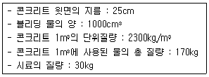
- 2.0cm/3/cm2
- 2.5cm/3/cm2
- 3.0cm/3/cm2
- 3.5cm/3/cm2
(정답률: 33%)
33. 관입저항침에 의한 콘크리트의 응결시간 시험방법에 관한 설명으로 틀린 것은?
- 콘크리트에서 4.75mm 체를 사용하여 습윤 체가름 방법으로 모르타르 시료를 채취한다.
- 침의 관입길이가 20mm가 될 때까지 소요된 힘을 침의 지지면으로 나누어 관입저항을 계산한다.
- 6회 이상 시험하며, 관입저항 측정값이 적어도 28MPa 이상이 될 때까지 시험을 계속한다.
- 초결시간은 모르타르의 관입저항이 3.5MPa이 될 때까지의 소요시간이다.
(정답률: 40%)
34. 일반 콘크리트용 잔골재의 절대건조 상태의 밀도는 최소 얼마 이상이어야 하는가? (단, 천연잔골재의 경우)
- 2.45g/cm3
- 2.50g/cm3
- 2.55g/cm3
- 2.60g/cm3
(정답률: 62%)
35. 콘크리트 압축강도의 데이터가 아래 표와 같을 때 범위(R)을 구하면?
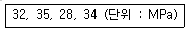
- 3.89MPa
- 7MPa
- 31.8MPa
- 32MPa
(정답률: 54%)
36. 아래 표에서 설명하고 있는 콘크리트 초기균열의 종류는?
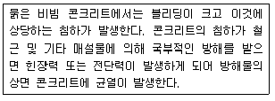
- 건조수축균열
- 소성수축균열
- 초기 건조균열
- 침하균열
(정답률: 73%)
37. 콘크리트 비파괴시험 방법의 일종인 초음파법에 의하여 측정하거나 추정할 수 없는 것은?
- 압축강도
- 균열깊이
- 건조수축량
- 전파속도
(정답률: 50%)
38. 콘크리트의 강도를 평가하기 위한 비파괴시험으로 적당하지 않은 것은?
- 반발경도법
- 초음파속도법
- X-ray 회절 분석법
- 인발법(Pull-out Test)
(정답률: 70%)
39. 콘크리트의 비비기에 대한 설명 중 옳지 않은 것은?
- 비비기는 미리 정해 둔 비비기 시간의 3배 이상 계속해서는 안된다.
- 연속믹서를 사용하면 비비기 시작 후 최초에 배출되는 콘크리트를 사용할 수 있다.
- 비비기 시간은 시험에 의해 정하는 것을 원칙으로 한다.
- 재료를 믹서에 투입하는 순서는 믹서의 형식, 비비기 시간 등에 따라 다르기 때문에 시험의 결과 또는 실적을 참고로 정한다.
(정답률: 75%)
40. 콘크리트의 강도에 대한 일반적인 설명으로 틀린 것은?
- 콘크리트의 인장강도는 압축강도의 약 15~20% 정도이고, 고강도로 갈수록 그 비가 증가한다.
- 기둥 확대기초, 교량의 교각 및 교대 등의 받침부 등에서는 부재면의 일부분에서만 큰 압축응력이 작용한다. 이와 같이 국부하중을 받는 경우의 콘크리트 압축강도를 콘크리트의 지압강도라고 한다.
- 충격강도는 말뚝의 항타, 충격하중을 받는 기계기초, 프리캐스트 부재 취급 중의 충돌, 폭발하중을 받는 방호구조 등과 같은 경우에 매우 중요하다.
- 도로 및 철도교량, 포장구조 등과 같은 구조는 반복하중을 받는 경우가 많고, 이런 반복하중을 받게 되면 부재가 정적강도보다 낮은 응력하에서도 파괴된다. 이런 현상을 피로파괴라고 한다.
(정답률: 58%)
3과목: 콘크리트의 시공
41. 내구성으로부터 정해진 수중불분리성 콘크리트의 최대 물-결합재비(%)를 나타내는 아래 표에 들어갈 숫자로 옳은 것은?
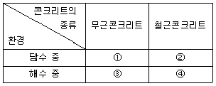
- ①65, ②55, ③60, ④50
- ①60, ②55, ③65, ④50
- ①65, ②55, ③60, ④55
- ①60, ②50, ③65, ④55
(정답률: 54%)
42. 공장 제품을 생산하기 위한 콘크리트 거푸집에 대한 설명으로 틀린 것은?
- 거푸집을 사용할 때에는 취급, 청소, 박리제 도포, 보수 관리 등에 충분한 주의가 필요하다.
- 일반적으로 거푸집 치수의 허용차는 그 제품 치수의 허용차보다 크게 하여야 한다.
- 공장 제품의 거푸집에는 강재 거푸집을 사용하는 것이 보통이지만, 제품의 생산개수가 적은 경우는 목재 거푸집을 사용하는 경우도 있다.
- 거푸집은 견고해야 함과 동시에 조립과 탈형이 간단한 구조로서 장기간의 사용에서도 형상이나 치수의 변화가 적은 것이라야 한다.
(정답률: 51%)
43. 매스콘크리트에 대한 설명 중 옳지 않은 것은?
- 온도균열방지 및 제어 방법으로 프리쿨링 및 파이프쿨링 방법 등이 이용되고 있다.
- 콘크리트의 온도상승을 감소시키기 위해 소요의 품질을 만족시키는 범위 내에서 단위 시멘트량이 적어지도록 배합을 선정하여야 한다.
- 수축이음을 설치할 경우 계획된 위치에서 균열 발생을 확실히 유도하기 위해서 수축이음의 단면 감소율을 10% 이상으로 하여야 한다.
- 매스콘크리트로 다루어야 하는 구조물의 부재치수는 일반적으로 표준으로서 넓이가 넓은 평판구조에서는 두께 0.8m 이상으로 한다.
(정답률: 60%)
44. 오토클레이브 양생의 특징으로 틀린 것은?
- 오토클레이브 양생을 한 콘크리트의 외관을 보통 양생한 포틀랜드시멘트 콘크리트 색의 특징과 다르며, 흰 색을 띈다.
- 내구성이 좋고, 황산염 반응에 대한 저항성이 크다.
- 용해성의 유리 석회가 없기 때문에 백태현상을 감소시킨다.
- 보통양생한 콘크리트에 비해 철근의 부착강도가 약 2배 정도가 된다.
(정답률: 49%)
45. 일반적인 섬유보강 콘크리트에서 콘크리트에 대한 감섬유의 혼합비율은 용적백분율(%)로 대략 얼마 정도인가?
- 0.1~0.5
- 0.5~2.0
- 2.0~4.0
- 4.0~7.0
(정답률: 61%)
46. 일반 콘크리트를 2층 이상으로 나누어 타설할 때 이어치기 허용시간 간격의 표준으로 옳은 것은?
- 외기온도가 25℃를 초과하는 경우 허용 이어치기 시간간격의 표준은 1.0시간이다.
- 외기온도가 25℃를 초과하는 경우 허용 이어치기 시간간격의 표준은 1.5시간이다.
- 외기온도가 25℃이하인 경우 허용 이어치기 시간간격의 표준은 2.5시간이다.
- 외기온도가 25℃이하인 경우 허용 이어치기 시간간격의 표준은 3.0시간이다.
(정답률: 54%)
47. 콘크리트의 타설에 대한 일반적인 설명으로 틀린 것은?
- 거푸집의 높이가 높을 경우 슈트, 펌프 배관, 버킷, 호퍼 등의 배출구와 타설면까지의 높이는 2.0m 정도를 원칙으로 한다.
- 콘크리트 타설 도중 표면에 떠올라 고인 블리딩수가 있을 경우에는 적당한 방법으로 이 물을 제거한 후가 아니면 그 위에 콘크리트를 쳐서는 안된다.
- 콘크리트를 2층 이상으로 나누어 타설할 경우, 하층의 콘크리트가 굳기 시작하기 전에 해야 한다.
- 콘크리트는 한 구획 내에서는 그 표면이 거의 수평이 되도록 타설하는 것을 원칙으로 한다.
(정답률: 59%)
48. 프리플레이스트 콘크리트에 대한 일반적인 설명으로 틀린 것은?
- 잔골재의 표면수율 변화는 주입 모르타르의 유동성이나 압축강도에 주는 영향이 크기 때문에 주의를 요한다.
- 대규모 프리플레이스트 콘크리트에 사용하는 주입 모르타르는 시공 중에 재료분리를 적게 하기 위해 빈배합으로 하여야 한다.
- 소정의 유동성을 얻을 수 있는 범위에서 단위결합제량의 증가를 적극 줄일 목적으로 잔골재는 조립률이 1.2~2.2인 것이 바람직하다.
- 대규모 프리플레이스트 콘크리트를 대상으로 할 경우, 굵은 골재의 최소 치수를 크게 하는 것이 효과적이다.
(정답률: 44%)
49. 댐 콘크리트에 대한 설명으로 틀린 것은?
- 롤러다짐 콘크리트의 시공을 할 때 타설이음면을 고압살수청소, 진공흡인청소등을 실시하는 것을 그린컷(green cut)이라고 한다.
- 콘크리트는 작업에 알맞은 범위에서 될 수 있는 대로 된 반죽이어야 한다.
- 콘크리트의 반죽질기를 슬럼프로 측정하는 경우, 타설장소에서 측정한 슬럼프는 체가름을 하여 40mm 이상의 굵은 골재를 제거하고 측정한 값으로 20~50mm를 표준으로 한다.
- 롤러다짐 콘크리트의 반죽질기는 VC시험으로 50±10초를 표준으로 한다.
(정답률: 52%)
50. 콘크리트 타설 시 내부진동기의 사용방법에 대한 설명으로 틀린 것은?
- 진동다지기를 할 때에는 내부진동기를 하층의 콘크리트 속으로 0.1m 정도 찔러 넣는다.
- 내부진동기는 연직으로 찔러 넣으며, 삽입간격은 일반적으로 0.5m 이하로 하는 것이 좋다.
- 1개소 당 진동시간 30~40초로 한다.
- 내부진동기는 콘크리트로부터 천천히 빼내어 구멍이 남지 않도록 한다.
(정답률: 70%)
51. 해양콘크리트에 대한 설명으로 틀린 것은?
- 콘크리트가 충분히 경화되기 전에 직접 해수에 닿지 않도록 보호하여야 하며, 이 기간은 보통포틀랜드 시멘트를 사용할 경우 대게 3일간이다.
- 시멘트는 고로슬래그 시멘트, 플라이애쉬 시멘트 등 혼합시멘트계 및 중용열 포틀랜드 시멘트를 사용하여야 한다.
- 해양 구조물은 특히 만조위로부터 위로 0.6m, 간조위로부터 아래로 0.6m 사이의 감조부분에는 시공이음이 생기지 않도록 시공계획을 세워야 한다.
- 강재와 거푸집판과의 간격은 소정의 피복을 확보하도록 하여야 하며, 간격재의 개수는 기초, 기둥, 벽 및 난간 등에는 2개/m3 이상을 표준으로 한다.
(정답률: 45%)
52. 서중 콘크리트에 대한 설명으로 잘못된 것은?
- 콘크리트는 비빈 후 되도록 빨리 타설하는 것이 바람직하며, 지연형 감수제를 사용하는 경우라도 2.5시간 이내에 타설하여야 한다.
- 콘크리트를 타설할 때의 콘크리트 온도는 35℃ 이하여야 한다.
- 하루 평균기론이 25℃를 초과할 것으로 예상되는 경우 서중 콘크리트로 시공하여야 한다.
- 일반적으로는 기온 10℃의 상승에 대하여 단위수량은 2~5% 증가하므로 소요의 압축강도를 확보하기 위해서는 단위 수량에 비례하여 단위 시멘트량의 증가를 검토하여야 한다.
(정답률: 55%)
53. 숏크리트 시공의 일반적인 설명으로 틀린 것은?
- 건식 숏크리트 배치 후 45분 이내에 뿜어붙이기를 실시하여야 한다.
- 습식 숏크리트 배치 후 60분 이내에 뿜어붙이기를 실시하여야 한다.
- 숏크리트는 타설되는 장소의 대기온도가 38℃이상이 되면 건식 및 습식 숏크리트 모두 뿜어붙이기를 할 수 없다.
- 숏크리트는 대기 온도가 4℃이상일 때 뿜어붙이기를 실시한다.
(정답률: 59%)
54. 콘크리트 한 차례 다지기한 후 적절한 시기에 다시 진동을 가하는 것을 재진동이라고 한다. 이러한 재진동에 대한 일반적인 설명으로 틀린 것은?
- 콘크리트가 다시 유동화되어 콘크리트중에 형성된 공극, 구극이 줄어든다.
- 콘크리트 강도 및 철근과의 부착강도가 증가된다.
- 침하균열의 방지에 효과가 있다.
- 재진동을 실시할 적절한 시기는 콘크리트가 유동할 수 있는 범위에서 될 수 있는 대로 늦은 시기가 좋으며, 일반적으로 초결이 일어난 직후에 실시하는 것이 좋다.
(정답률: 71%)
55. 고강도 콘크리트의 타설에 대한 아래 표의 설명에서 ()안에 알맞은 것은?
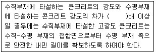
- 2.4
- 1.9
- 1.7
- 1.4
(정답률: 52%)
56. 공장 제품 콘크리트에 대한 일반적인 설명으로 틀린 것은?
- 공장 제품에 사용되는 섬유보강재는 주로 강섬유와 합성수지계섬유를 사용하며, 일부의 경우 카본섬유나 아라미드등의 고성능 섬유를 사용하기도 한다.
- 프리스트레스트 콘크리트 공장 제품의 경우 손환골재를 사용할 수 없다.
- 촉진양생을 하는 일반적인 공장 제품의 강도는 재령 28일 압축 강도 시험값을 기준으로 한다.
- 일반적으로 공장 제품에서는 물-결합재비가 적은 된반죽의 콘크리트가 사용되므로 이와 같은 콘크리트를 비빌 때에는 강제식 믹서가 적합하다.
(정답률: 57%)
57. 고강도 콘크리트의 배합으로서 적절하지 않은 것은?
- 고강도 콘크리트의 물-결합재비는 소요의 강도와 내구성을 고려하여 정한다.
- 잔골재율은 소요의 워커빌리티를 얻도록 시험으로 결정하며 가능한 한 크게 하도록 한다.
- 동결융해에 대한 대책이 필요한 경우를 제외하고는 AE제를 사용하지 않는 것은 원칙으로 한다.
- 단위 시멘트량은 소요의 워커빌리티와 강도를 얻을 수 있는 범위내에서 가능한 적게 되도록 한다.
(정답률: 64%)
58. 포장콘크리트의 습윤양생 기간에 대한 일반적인 설명으로 틀린 것은? (단, 콘크리트 표준시방서의 규정에 따른다.)
- 습윤양생 기간은 시험에 의해서 정해야 하며, 현장양생을 시킨 공시체의 휨강도가 배합강도의 50%에 도달할 때까지의 기간으로 한다.
- 보통 포틀랜드 시멘트를 사용한 경우 습윤양생 기간은 14일간을 표준으로 한다.
- 조강 포틀랜드 시멘트를 사용한 경우 습윤양생 기간은 7일간을 표준으로 한다.
- 중용열 포틀랜드 시멘트를 사용한 경우 습윤양생 기간은 21일간을 표준으로 한다.
(정답률: 51%)
59. 경량콘크리트의 제조 및 시공에 대한 다음의 설명 중 틀린 것은?
- 경량콘크리트는 경량골재콘크리트, 경량기포콘크리트, 문잔골재콘크리트 등으로 분류된다.
- 경량골재의 경량성을 보다 효과적으로 발휘시키기 위해서는 잔골재와 굵은골재 모두 경량골재로 하는 것이 좋다.
- 경량골재콘크리트의 공기량은 보통골재를 사용한 콘크리트에 비해 크게 하는 것을 원칙으로 한다.
- 경량골재콘크리트를 내부진동기로 다질 때 보통골재콘크리트에 비해 진동기를 찔러 넣는 간격을 크게 하거나 진동시간을 짧게 해야 한다.
(정답률: 50%)
60. 포장 콘크리트의 배합기준에서 설계기준 휨강도(f2s)는 몇 MPa이상이어야 하는가?
- 2.5MPa
- 4MPa
- 4.5MPa
- 6MPa
(정답률: 66%)
4과목: 구조 및 유지관리
61. 복철근 콘크리트 단면에 압축철근비 ρ'=0.015가 배근된 경우 순간처짐이 30mm일 때, 1년이 지난 후의 전체 처짐량은? (단, 작용하중은 지속하중이며 시간경과계수 ξ=1.4임)
- 24mm
- 30mm
- 42mm
- 54mm
(정답률: 47%)
62. 그림의 복철근 단면이 압축부에 3-D22(As'=1161mm2)의 철근과 인장부에 6-D32(As=4765mm2)의 철근을 갖고 있을 때 공칭 휨강도(Mn)를 구하면? (단, 파괴 시 압축부의 철근이 항복한다고 가정하고, fck=28MPa, fu=350MPa이다.)
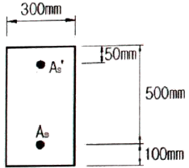
- 702.1kNㆍm
- 747.6kNㆍm
- 785.7kNㆍm
- 824.3kNㆍm
(정답률: 37%)
63. fck=21MPa, fu=300MPa로 설계된 지간이 4m인 단순지지 보가 있다. 처짐을 계산하지 않는 경우, 보의 최소두께는?
- 200mm
- 215mm
- 225mm
- 250mm
(정답률: 32%)
64. 철근콘크리트 구조물에서 균열을 허용균열폭 이하로 제어하기 위하여 사용하는 방법이 아닌 것은?
- 철근의 피복두께를 증가시킨다.
- 원형철근보다 이형철근을 사용한다.
- 철근들을 콘크리트의 인장구역에 고르게 분포시킨다.
- 적은 수의 굵은 철근보다 많은 수의 가는 철근을 사용한다.
(정답률: 73%)
65. 다음과 같이 단면이 400mm×400mm이고, 축방향 철근량이 4000mm2인 띠철근 압축부재에서 fck=24MPa, fu=280Mpa라면 이 기둥의 공칭축강도(Pn)는 얼마인가?
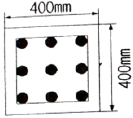
- 2410kN
- 2827kN
- 3442kN
- 4357kN
(정답률: 53%)
66. 아래 그림과 같은 단철근 직사각형 보 단면의 균형 철근량(As)은? (단, fck=30MPa, fu=300MPa)
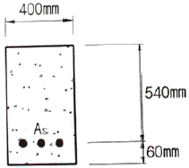
- 8347mm2
- 9710mm2
- 10233mm2
- 10404mm2
(정답률: 44%)
67. 콘크리트 압축 강도 추정을 위한 반발 경도 시험(KS F 2730)에 대한 설명으로 틀린 것은?
- 시험할 콘크리트 부재는 두께가 100mm이상이어야 하며, 하나의 구조체에 고정 되어야 한다.
- 시험할 때 타격 위치는 가장자리로부터 100mm 이상 떨어져야 하고, 서로 300mm 이내로 근접해서는 안된다.
- 콘크리트 내부의 온도가 0℃ 이하인 경우 정상보다 높은 반발 경도를 나타낸다.
- 탄산화가 진행된 콘크리트의 경우 정상보다 낮은 반발 경도를 나타낸다.
(정답률: 49%)
68. 발생된 손상이 안전성에 심각한 영향을 주지 않는다고 판단하면 보수 조치를 시행하는데, 다음 중 보수 조치에 해당하는 것은?
- 탄소섬유시트 접착공법
- 강판접착 공법
- 주입공법
- 외부케이블 공법
(정답률: 76%)
69. 일반적인 철근콘크리트 구조물에서 균열발생을 방지하여야 할 경우 적용하는 표준적인 온도균열지수의 값은?
- 1.0이상
- 1.25이상
- 1.5이상
- 1.7이상
(정답률: 61%)
70. 콘크리트를 타설하고 다짐하여 마감작업을 한 이후에도 콘크리트는 계속하여 압밀되는 경향을 보인다. 이러한 현장을 발생하는 굳지 않은 콘크리트의 균열을 침하균열이라 한다. 이러한 침하균열에 영향을 미치는 요소에 대한 설명으로 틀린 것은?
- 콘크리트 피복두께가 클수록 침하균열은 증가한다.
- 슬럼프가 클수록 침하균열은 증가한다.
- 배근한 철근의 직경이 클수록 침하균열은 증가한다.
- 누수되는 거푸집을 사용한 경우 침하균열은 증가한다.
(정답률: 61%)
71. 계수하중에 의한 전단력 Vu=550kN이고, bw=300mm, d=500mm인 직사각형 단면 보의 전단보강에 관한 설명으로 옳은 것은? (단, fck=24MPa, fu=400MPa이다.)
- 전단보강이 필요없다.
- 최소 전단철근을 배치한다.
- 인장철근을 2단으로 배치한다.
- 철근콘크리트 보의 단면을 증가시켜야 한다.
(정답률: 37%)
72. 두께 150mm의 1방향 철근콘크리트 슬래브의 수축ㆍ온도 철근의 간격은 최대 얼마로 하여야 하는가?
- 500mm
- 450mm
- 400mm
- 350mm
(정답률: 57%)
73. b=400mm, d=500mm인 직사각형 보단면의 최소철근량은? (단, fck=38MPam fu=400MPa이다.)
- 700mm2
- 742mm2
- 771mm2
- 880mm2
(정답률: 46%)
74. 열화된 콘크리트의 단면보수공법 재료로서 사용되는 폴리머 시멘트 모르타르의 품질기준 중 부착강도 기준으로 옳은 것은?
- 0.3MPa 이상
- 0.5MPa 이상
- 1.0MPa 이상
- 1.5MPa 이상
(정답률: 69%)
75. 알칼리 골재반응이 원인으로 추정되는 부재의 향후 팽창량을 예측하기 위하여 필요한 시험은?
- SEM 시험
- 코어의 잔존팽창량 시험
- 압축강도 시험
- 배합비 추정시험
(정답률: 61%)
76. 스터럽을 사용하는 이유로 가장 적합한 것은?
- 휨응력에 의한 균열 방지
- 보에 작용하는 사진장 응력에 의한 균열방지
- 주철근의 상호위치 확보
- 압축을 받는 축방향 처근의 좌굴방지
(정답률: 71%)
77. 탄성화 방지 대책으로 적절한 것이 아닌 것은?
- 물-시멘트 비(W/C)를 적게
- 밀실한 콘크리트로 타설
- 철근의 피복두께 확보
- 콘크리트에 수축줄눈 고려
(정답률: 59%)
78. 단면 복구재로서 폴리머 시멘트계 재료가 일반 콘크리트 재료보다 우수하지 않은 것은?
- 내화ㆍ내열성
- 염분 차단성
- 부착성
- 방수성
(정답률: 68%)
79. 콘크리트 구조물의 점검(진단)방법 중 음향방출(Acoustic Emission)법에 대한 설명으로 틀린 것은?
- 재료의 동적인 변화를 파악하는 것이 가능하다.
- 구조물의 사용을 중단하지 않고도 검사가 가능하다.
- Kaiser효과로 인해 검사횟수에 제한적이다.
- 기존 구조물에 하중을 가하지 않은 상태에서도 검사가 용이하다.
(정답률: 58%)
80. 콘크리트에 함유된 염화물이온량 측정용 지시약으로 적절하지 않은 것은?
- 질산은
- 페놀프탈레인
- 티오시안산 제2수은
- 크롬산 칼륨
(정답률: 73%)